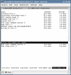
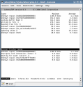

Finding system latency with LatencyTOP
Stuttering audio or an unresponsive desktop – typically caused by operating system latency – are two things that annoy users. They can be difficult problems to diagnose, though, as they are transient and buried deep inside the kernel. A new tool, LatencyTOP, seeks to provide more information on where latency is occurring so that it can be fixed or avoided.
Latency is the measure of how much time elapses between when an action is initiated and when its effects become visible. If a user clicks the mouse button in an application, the latency is the amount of time between that click and when the associated action begins. There are lots of different reasons for latency, some of which are outside of Linux's control; being able to measure what latency the OS is contributing will be very useful. LatencyTOP is reporting on a specific subset of latency causes, as described in the announcement:
LatencyTOP measures the average and maximum amount of latency in various operations by inserting annotation calls in the kernel. An example from the announcement is instructive:
asmlinkage long sys_sync(void)
{
+ struct latency_entry reason;
+ set_latency_reason("sync system call", &reason);
do_sync(1);
+ restore_latency_reason(&reason);
+
return 0;
}
The scheduler accumulates any time spent sleeping, between the
set_latency_reason() and restore_latency_reason() calls,
charging it to the "sync system call". Any lower level calls to set the
latency reason will be ignored in this code path – they may be useful
in other code paths – as it is the highest level active reason that
gets charged.
The current interface for annotating is likely to change, though the semantics will stay the same. Comments on the original submission suggested using the kernel markers feature that was merged for 2.6.24. LatencyTOP developer Arjan van de Ven seems amenable to that; reusing a kernel interface, rather than adding a new one, is generally the right choice. There is other work to do as well, the patch was submitted for other kernel hackers to test and comment on, not to be merged into the mainline.

LatencyTOP comes with a userspace application, shown at right, that displays the information gathered. It reads from the /proc/latency_stats file that is created by the LatencyTOP infrastructure patch – so long as you enable CONFIG_LATENCYTOP in the kernel. It displays the nine – an off-by-one in the code as it would seem that ten were intended – largest latencies over the past 30 seconds in the upper pane.

A list of process names runs along the bottom of the display, which can be selected with the arrow keys. The latency sources for that process will then be shown in the lower pane. The example at left shows the tool with the firefox process selected. As can be seen, there are still lots of areas that need annotations – "Unknown reason" along with the wait channel are displayed when the reason has not been set. When narrowing a problem down, it should be straightforward for a kernel hacker to add annotations to the appropriate locations.
LatencyTOP, like its sibling PowerTOP – also developed by van de Ven at the Intel Open Source Technology Center – is a powerful tool for trying to track down system problems. It will probably undergo some changes along the way: the userspace application is still rather rudimentary and the kernel data collection needs finer-grained locking. But, before too long, a mainstream tool to measure system latency based on this work should appear.
| Index entries for this article | |
|---|---|
| Kernel | Latency |
Posted Jan 24, 2008 7:12 UTC (Thu)
by arjan (subscriber, #36785)
[Link]
Posted Jan 24, 2008 11:35 UTC (Thu)
by csali (guest, #42016)
[Link] (1 responses)
Posted Jan 24, 2008 15:15 UTC (Thu)
by jake (editor, #205)
[Link]
Posted Jan 24, 2008 18:35 UTC (Thu)
by johnkarp (guest, #39285)
[Link] (1 responses)
Posted Jan 24, 2008 21:59 UTC (Thu)
by arjan (subscriber, #36785)
[Link]
Finding system latency with LatencyTOP
Btw, in the current version of the LatencyTOP patch, the annotations are all gone, they're no
longer needed.
(and, many aren't needed in the original patch, since most of the Unknown ones actually get
resolved in userspace even in the original, and adding a missing annotation even there was
just adding a line to the userspace program)
The function is called restore_latency_reason in the code and reset_latency_reason in the article.
Finding system latency with LatencyTOP
Finding system latency with LatencyTOP
> The function is called restore_latency_reason in the code and reset_latency_reason in the
article.
Good catch! Fixed, thanks.
jake
Audio capture too, or just playback?
Would this patch also help diagnose latency in the case of audio capture,
not just playback?
Because they seem to be related but different problems; playback latency
is the time between a userspace process making a syscall to write audio
and the kernel poking the audio hardware, capture latency the time between
the audio hardware asserting an interrupt and the userspace process
receiving the data. Or at least thats my educated guess, I Am Not A Kernel
Hacker.
Audio capture too, or just playback?
Today.. only a little... (eg it shows at least how long things take etc)
But the plan/hope is that the -rt latency tracer makes it to mainline at some point in the
future, which then really would help latencytop in giving the level of deep details needed for
this kind of analysis.